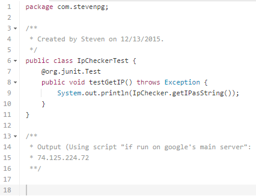

Project Description
IpChecker is a simple java class that allows for easy retrieval of the
external ip address of the current machine using a static method.
The class encapsulates all need for URL handling and website parsing by
automatically using the free amazon web services URL, parsing its output,
and returning this value as a string.
From within the static method, objects are generated that attempt to retrieve
the external ip address. Should there be any exceptions, a specific error string
is returned with an integer that represents the specific error.
To use the static method:
String externaIP = IpChecker.getIP();
If there is an error forming URl, -1 is returned as string
If there is an error reading the web page, -2 is returned as string
If there is an unknown error, -3 is returned as string